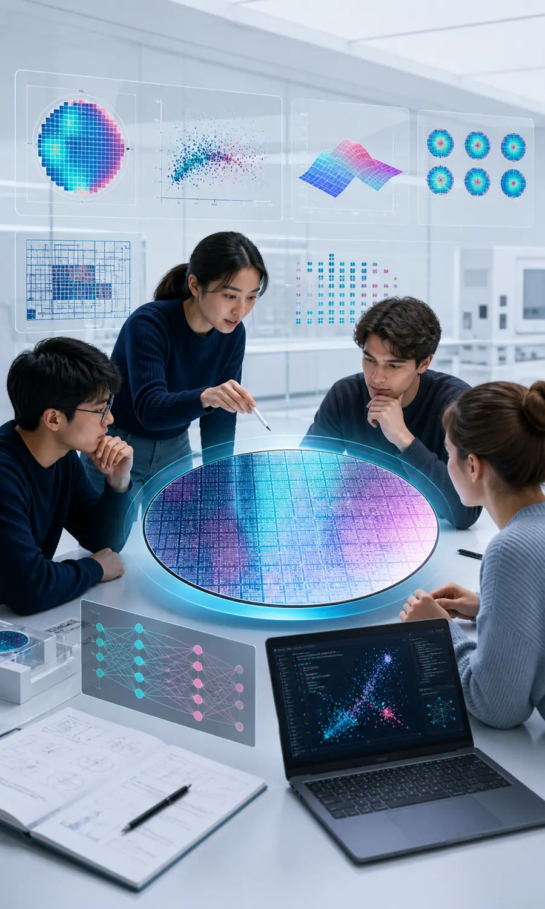

문제
누가 어떤 신호를 보고 무엇을 결정해야 하는가?
SK하이닉스 지원 준비생 · AI 프로젝트 단기 특강
AI 활용 경험 3000자를 말로 꾸미지 않습니다. 공정 문제를 찾고, 팀과 반박하며, AI 결과를 검증하고, GitHub 포트폴리오로 증명합니다.
SK하이닉스 공식 교육과정이 아닌 지원 준비생 대상 독립 특강입니다.

앞 단계의 출력이 다음 단계의 입력입니다. 설치, 통계, AI를 따로 배우지 않고 하나의 엔지니어링 판단으로 연결합니다.
AI는 답을 대신 말하는 도구가 아니라, 가설 후보를 넓히고 검증 가능한 산출물을 빠르게 만드는 협력자입니다.
누가 어떤 신호를 보고 무엇을 결정해야 하는가?
포토리소그래피·광학·고분자·통계 중 어떤 원리가 현상을 설명하는가?
Governing equation, 보존법칙, 단조성, 시간 순서를 확인한다.
상관관계와 대안 가설을 데이터 분할과 시각화로 비교한다.
결정, 성능 KPI, 위험 KPI, 한계를 재현 가능한 페이지로 남긴다.
역사학 석사생이 질문·사료·주장을 좁혀 논문을 완성하듯, 엔지니어는 문제·데이터·근거·반증을 좁혀 작동하는 결과물을 완성합니다.
누가 어떤 숫자를 보고 어떤 결정을 해야 하는가?
ARTIFACT · PLAN.md한 행, 단위, 시점, 출처, 결측과 편중을 정의합니다.
ARTIFACT · schema & audit공식문서·논문 원문에서 물리식의 변수와 적용 조건을 확인합니다.
ARTIFACT · research/SOURCES.md관찰, 주가설, 대안가설, 반증조건을 분리합니다.
ARTIFACT · hypothesis table기준모델, Holdout, 오차 사례로 AI의 기여를 확인합니다.
ARTIFACT · report & tests입력 변화, 판단, 위험, 한계를 Live Page에서 보여줍니다.
ARTIFACT · URL & pitch원문 URL, 확인한 사실, 적용범위, 미확인을 근거카드로 정리
문제·출처 3개·데이터 정의·가설·반증조건을 저장소에 전달
데이터 감사→기준모델→Holdout→보고서→웹페이지를 제작
Commit 이력과 작동 데모를 하나의 공개 포트폴리오로 제시
Positive·Negative PR을 한꺼번에 평균내지 않습니다. PR tone, 코팅 두께, Dose·Focus, PEB·현상조건이 CD와 결함 위험에 함께 연결되는 구조를 봅니다.
아래 네 칸만 채워도 모델 선택 전에 검증 가능한 프로젝트 문장이 만들어집니다. 입력값은 서버로 전송되지 않습니다.
[사용자]가 [관측 데이터]를 보고 [결정]할 수 있도록, [전공 원리]와 AI 분석을 결합한다.
숫자가 많다고 증거가 되는 것은 아닙니다. 데이터가 어떻게 수집되고 누락되고 편중되었는지부터 확인합니다.
Run, Wafer, Lot, 시간창 중 무엇인지와 변수 단위를 먼저 고정합니다.
일괄 삭제하지 않고 특정 Tool·기간·조건에 몰렸는지 봅니다.
센서 오류, 단위 오류, 실제 희귀 조건을 구분하기 전에는 삭제하지 않습니다.
전체 평균이 특정 장비나 기간만 대표하는지 표본 수로 확인합니다.
예측 시점에 알 수 없는 품질 결과가 입력에 섞이지 않았는지 점검합니다.
학습과 평가 데이터를 분리하고 복잡한 모델이 단순 기준보다 나은지 확인합니다.
예쁜 차트를 고르지 않습니다. 무엇을 검증할지 먼저 말한 뒤 그래프를 선택합니다.
분포와 꼬리
Tool별 차이
두 변수의 관계
시간 변화·Drift
결측·상관 구조
완성 수식이나 결론을 주지 않습니다. 팀이 질문·반박·검증을 반복할 수 있도록 교과 탐색 범위, 데이터 URL, 증거 기준만 제공합니다.
매일 기능을 늘리는 대신 판단 근거를 하나씩 남깁니다. GitHub 이력이 프로젝트 과정과 AI 활용을 보여주는 포트폴리오가 됩니다.
사용자, 결정, KPI, 하지 않을 일을 PLAN에 고정합니다.
PROOF공식문서·논문 원문을 확인하고 근거·범위·미확인을 기록합니다.
PROOF감사 결과와 주가설·대안가설·반증조건을 연결합니다.
PROOF기준모델과 개선모델을 Holdout·오차 사례로 비교합니다.
PROOF입력 두 개 이상을 바꾸고 결과와 위험도가 갱신되게 합니다.
PROOFAI 오류, 사람의 수정, 한계와 추가실험을 기록합니다.
PROOF문제, 데이터, 데모, 성능, 검증, 한계를 압축합니다.
PROOFFB 우선순위: 데이터 누수 → 작동하지 않는 UI → 기준모델 부재 → 인과 과장 → AI 수치 무검증 → 과도한 범위. 화려한 UI보다 검증 가능한 작은 제품을 높게 평가합니다.
각 도구의 역할과 통과 기준을 이해한 뒤 설치합니다. 화면에는 지금 실행할 단계 하나만 띄우고, 15명 이상 완료하면 다음 단계로 이동합니다.
파일·Terminal·diff를 한 화면에서 확인
작업과 사람의 판단을 Commit으로 기록
데이터 감사·그래프·모델·테스트 실행
웹·논문·공식문서 조사와 근거카드 작성
둘 중 하나로 분석·보고서·웹페이지 제작
irm https://claude.ai/install.ps1 | iexpowershell -ExecutionPolicy ByPass -c "irm https://chatgpt.com/codex/install.ps1 | iex"curl -fsSL https://claude.ai/install.sh | bashcurl -fsSL https://chatgpt.com/codex/install.sh | shcode만 실패하면 VS Code를 직접 실행하고, Windows가 Store를 열면 py를 사용합니다. Claude Code·Codex가 보이지 않으면 Terminal을 새로 엽니다. WSL은 수업 중 처음 설치하지 않습니다. 10분 이상 막히면 Telegram에 🟡 번호 / 단계 / 오류 한 줄만 남기고 데이터 분석으로 이동합니다.Antigravity 앱 로그인 후 Git·Python·VS Code와 선택한 Coding Agent의 버전을 확인합니다.
git --version
python --version
code --version
claude --version # Claude Code 선택자
codex --version # Codex 선택자Claude Code 또는 Codex 중 하나만 실행합니다. API Key를 Telegram이나 코드에 붙이지 않습니다.
claude doctor # Claude Code 선택자, 이후 claude 실행
codex login # Codex 선택자, 이후 codex doctor프로젝트 폴더에서 환경점검 결과 마지막 줄을 확인합니다.
git clone YOUR_REPOSITORY_HTTPS_URL semiconductor-ai-project
cd semiconductor-ai-project
python tools/student_preflight.py행·열, 단위, 결측, 중복, 극단값, Tool·Lot·시간 편중 순서로 확인합니다.
python -m pip install -r requirements-class.txt
python lessons/data_quality_visualization_demo.py
python -m unittest discover -s tests -vAI가 수정한 모든 줄이 요청과 연결되는지 확인한 뒤 증거를 남깁니다.
git diff --check
git status --short
python -m unittest discover -s tests -v
git add .
git commit -m "Complete first data audit"
git pushEND OF SESSION / 116—120
수업 전 질문지를 데이터 감사 결과로 다시 쓰고, 7일 안에 검증할 수 있는 후보 두 개를 남깁니다.